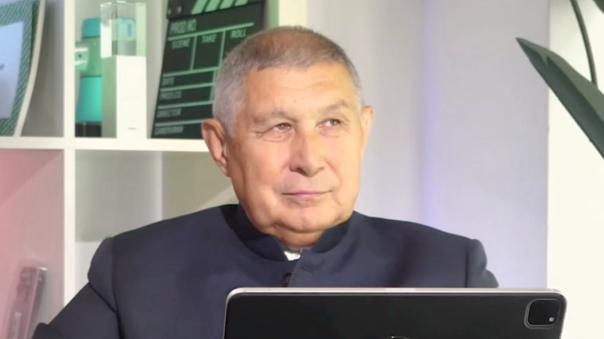

Этот разговор стал главой книги
«Систему науки нужно строить с детского сада» — личное обращение героя к читателю, цитаты,
опоры и блок «Возьми с собой».
Читать главу →

01О герое
Президент Академии наук Татарстана — он курировал строительство Иннополиса с первого котлована. О системном подходе: от обучения детей безопасности до цифровых систем республики, и о жене как главном наставнике.
02Ключевые тезисы
Наука требует среды, а не только талантливых одиночек.
Научную компетентность нужно формировать с детства.
Проект должен иметь заказчика, результат и понятную пользу.
Дисциплина, решение и коммуникация — база управленческого роста.
Руководитель силен настолько, насколько сильна команда рядом с ним.
03Возьми с собой
Что применить
Строй вокруг себя систему: наставники, команда, знания, режим, заказчик, результат.
Не жди идеальных условий: начинай с того, что можешь организовать уже сейчас.
Развивай дисциплину раньше, чем начнешь говорить о больших компетенциях.